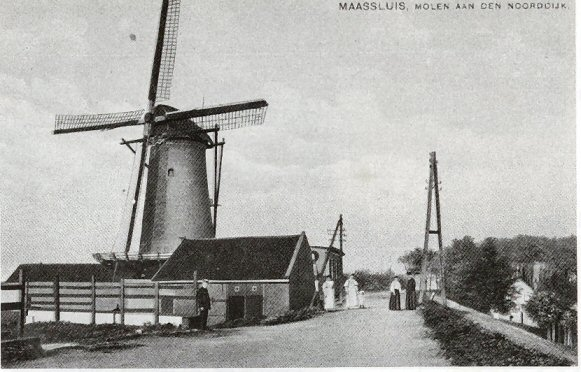
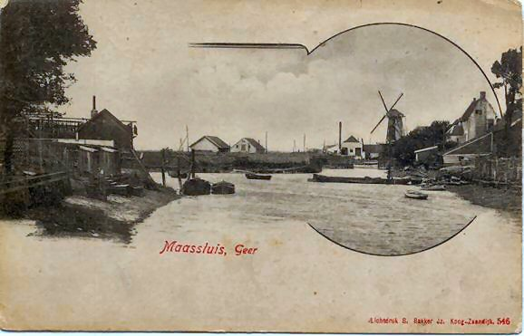
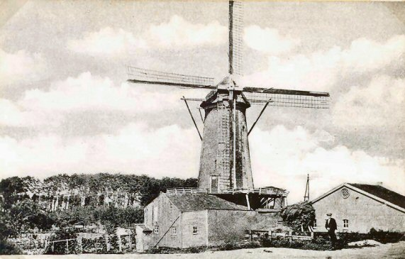

Maassluis verdwenen molens

|
 Korenmolen de De Arend aan de Noorddijk bouwjaar 1772 Gesloopt 1927 |
 De Arend 2 |
|
 De Arend 3 |
 |
 |
 |
 Deze pagina is gemaakt op 25-12-2006: Tijd: 20:27 uur.
Deze pagina is gemaakt op 25-12-2006: Tijd: 20:27 uur.

Laatste wijziging: 26-12-2013. tijd:20.55 uur.
Met dank aan: de
Hollandsche molen/Rob Pols/Hans Klok/Gerard Barendse/
Erwin Esselink/Teun van der Sloot/voor het gebruik van de foto's